Try new paper (https://www.bioconductor.org/help/workflows/RNAseq123/)
library(limma)
library(Glimma)
library(GGally)
library(ggplot2)
library(edgeR)
library(DESeq2)
rm(list=ls())
thisPath <- "/Users/lindz/bigPint"
beeCounts <- read.delim(file=paste0(thisPath, "/AllLaneCount.txt"), row.names=1, stringsAsFactors = FALSE)
colnames(beeCounts) <- c("NC.1", "NC.2", "NR.1", "VR.1", "NS.1", "VP.1", "NS.2", "VR.2", "NP.1", "VP.2", "VC.1", "NP.2", "VP.3", "NP.3", "VS.1", "VS.2", "VC.2", "NC.3", "VP.4", "NC.4", "NR.2", "VC.3", "VC.4", "NP.4", "VR.3", "NC.5", "VS.3", "NP.5", "VC.5", "VS.4", "NS.3", "VS.5", "VP.5", "NR.3", "NR.4", "VC.6", "NS.4", "NC.6", "NP.6", "VR.4", "NR.5", "NR.6", "NS.5", "VP.6", "NS.6", "VR.5", "VR.6", "VS.6")
beeCounts <- beeCounts[ , order(names(beeCounts))]
x <- DGEList(counts=beeCounts)
exVars <- read.csv("/Users/lindz/bigPint/tblshoot/CheckAllVars/extraVarClean.csv")
x$samples$group <- as.factor(unlist(lapply(colnames(x), function(x) substring(unlist(strsplit(x, "[.]"))[1],1))))
x$samples$virus <- as.factor(unlist(lapply(colnames(x), function(x) substring(unlist(strsplit(x, "[.]"))[1],1,1))))
x$samples$diet <- as.factor(unlist(lapply(colnames(x), function(x) substring(unlist(strsplit(x, "[.]"))[1],2,2))))
x$samples$lane <- exVars$Lane
x$samples$day <- exVars$Day
x$samples$mortality <- exVars$Mortality
x$samples$sbv <- exVars$SBV
x$samples$iapv <- exVars$IAPV
x$samples$rnaConc <- exVars$rnaConc
x$samples$rin <- exVars$RINMake quantitative extraneous variables categorical
x$samples$day <- as.factor(x$samples$day)
x$samples$mortality <- cut(x$samples$mortality,3,labels=c('Low','Medium','High'))
x$samples$sbv <- cut(x$samples$sbv,3,labels=c('Low','Medium','High'))
x$samples$iapv <- cut(x$samples$iapv,3,labels=c('Low','Medium','High'))
x$samples$rnaConc <- cut(x$samples$rnaConc,3,labels=c('Low','Medium','High'))
x$samples$rin <- cut(x$samples$rin,3,labels=c('Low','Medium','High'))Filter then normalize
# rule of thumb is to keep rows that have at least 10 counts for several samples
keep.exprs <- which(rowSums(x[[1]]>10)>8)
x <- x[keep.exprs,, keep.lib.sizes=FALSE] # 15,314 to 10,221
x <- calcNormFactors(x, method = "TMM")
rld <- rlog(x[[1]])Make boxplots
ggparcoord(data.frame(rld), columns=1:48, alphaLines=0, boxplot=TRUE, scale="globalminmax") + coord_flip()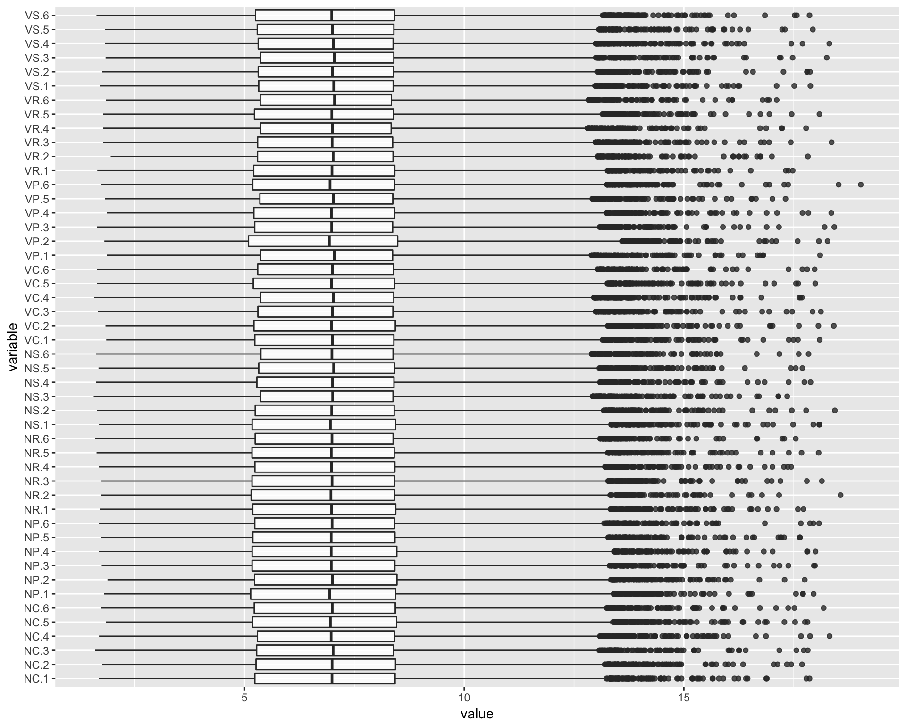
Create MDS plots
library(RColorBrewer)
col.group <- x$samples$group
levels(col.group) <- brewer.pal(nlevels(col.group), "Set1")
col.group <- as.character(col.group)
col.virus <- x$samples$virus
levels(col.virus) <- brewer.pal(nlevels(col.virus), "Set2")Warning in brewer.pal(nlevels(col.virus), "Set2"): minimal value for n is 3, returning requested palette with 3 different levelscol.virus <- as.character(col.virus)
col.diet <- x$samples$diet
levels(col.diet) <- brewer.pal(nlevels(col.diet), "Set3")
col.diet <- as.character(col.diet)
col.lane <- x$samples$lane
levels(col.lane) <- brewer.pal(nlevels(col.lane), "Set1")Warning in brewer.pal(nlevels(col.lane), "Set1"): minimal value for n is 3, returning requested palette with 3 different levelscol.lane <- as.character(col.lane)
col.day <- x$samples$day
levels(col.day) <- brewer.pal(nlevels(col.day), "Set2")Warning in brewer.pal(nlevels(col.day), "Set2"): minimal value for n is 3, returning requested palette with 3 different levelscol.day <- as.character(col.day)
col.mortality <- x$samples$mortality
levels(col.mortality) <- brewer.pal(nlevels(col.mortality), "Set3")
col.mortality <- as.character(col.mortality)
col.sbv <- x$samples$sbv
levels(col.sbv) <- brewer.pal(nlevels(col.sbv), "Set1")
col.sbv <- as.character(col.sbv)
col.iapv <- x$samples$iapv
levels(col.iapv) <- brewer.pal(nlevels(col.iapv), "Set2")
col.iapv <- as.character(col.iapv)
col.rnaConc <- x$samples$rnaConc
levels(col.rnaConc) <- brewer.pal(nlevels(col.rnaConc), "Set3")
col.rnaConc <- as.character(col.rnaConc)
col.rin <- x$samples$rin
levels(col.rin) <- brewer.pal(nlevels(col.rin), "Set1")
col.rin <- as.character(col.rin)Group RLOG
plotMDS(rld, labels=colnames(rld), col=col.group)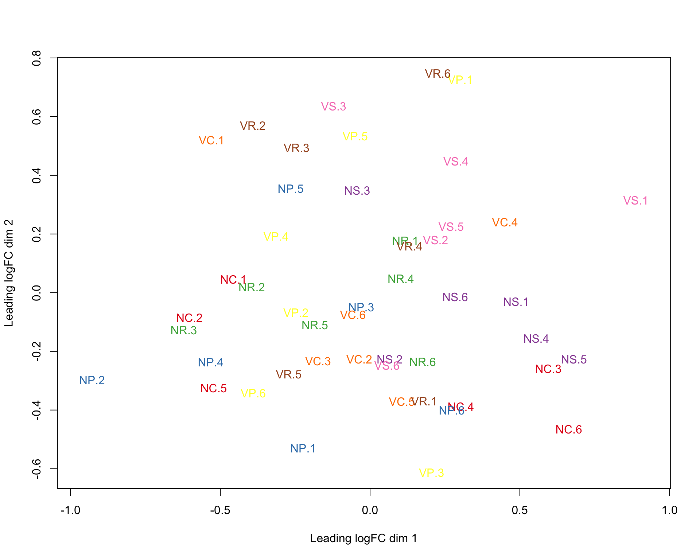
Virus RLOG
plotMDS(rld, labels=colnames(rld), col=col.virus)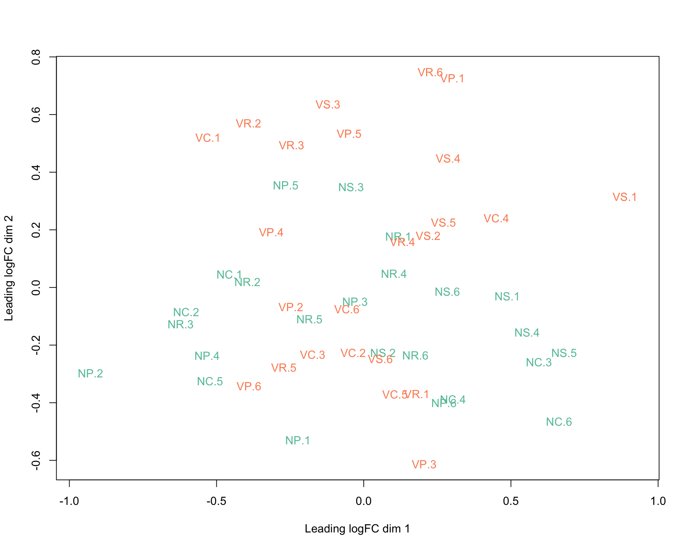
Diet RLOG
plotMDS(rld, labels=colnames(rld), col=col.diet)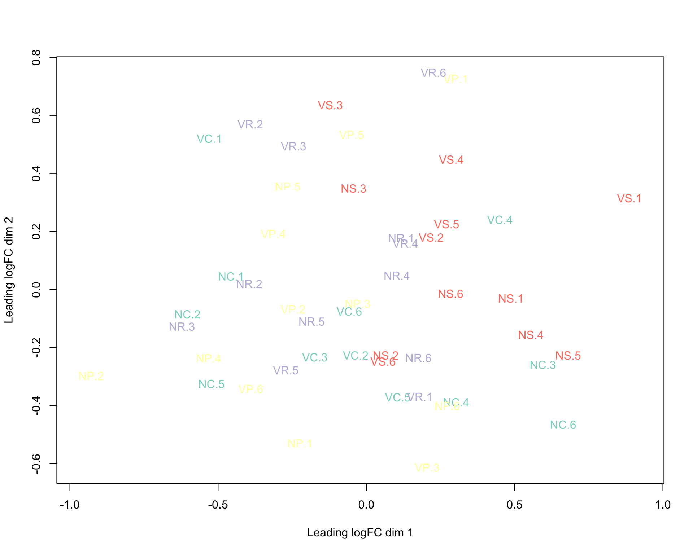
Lane RLOG
plotMDS(rld, labels=colnames(rld), col=col.lane)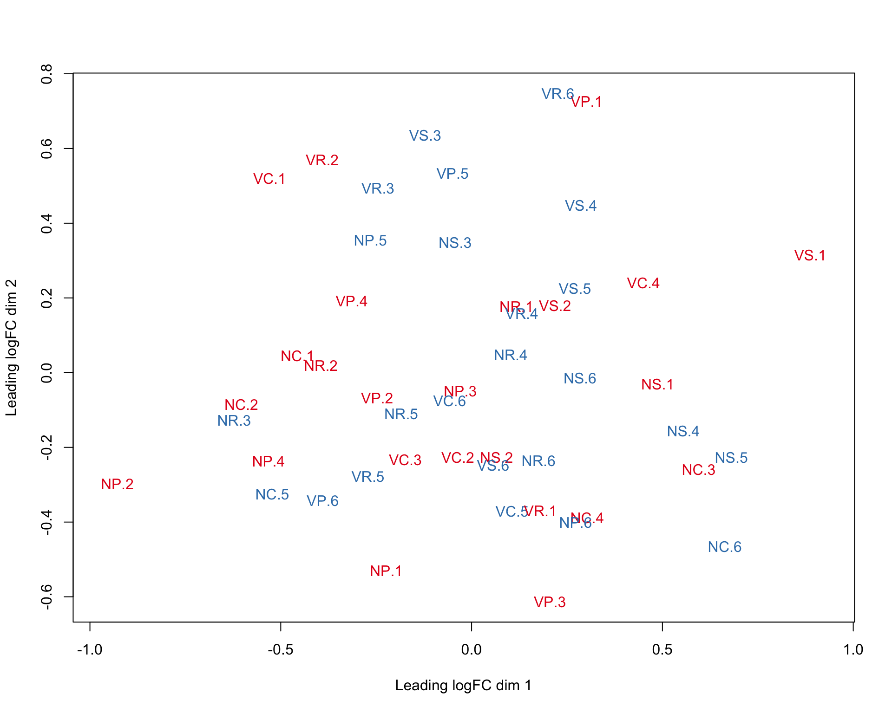
Day RLOG
plotMDS(rld, labels=colnames(rld), col=col.day)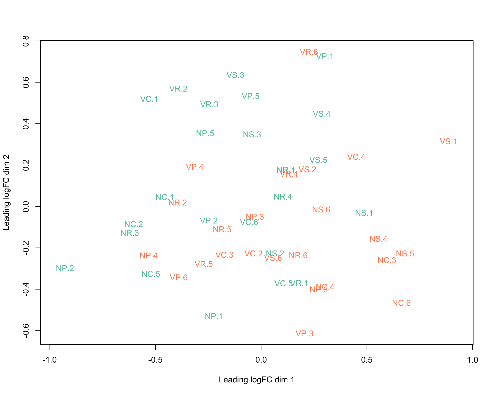
Mortality RLOG
plotMDS(rld, labels=colnames(rld), col=col.mortality)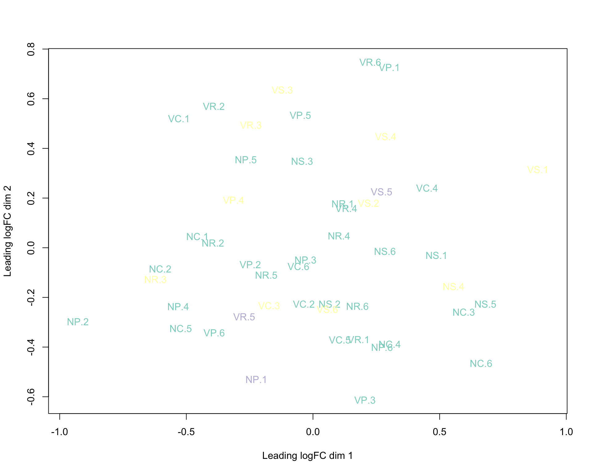
SBV RLOG
plotMDS(rld, labels=colnames(rld), col=col.sbv)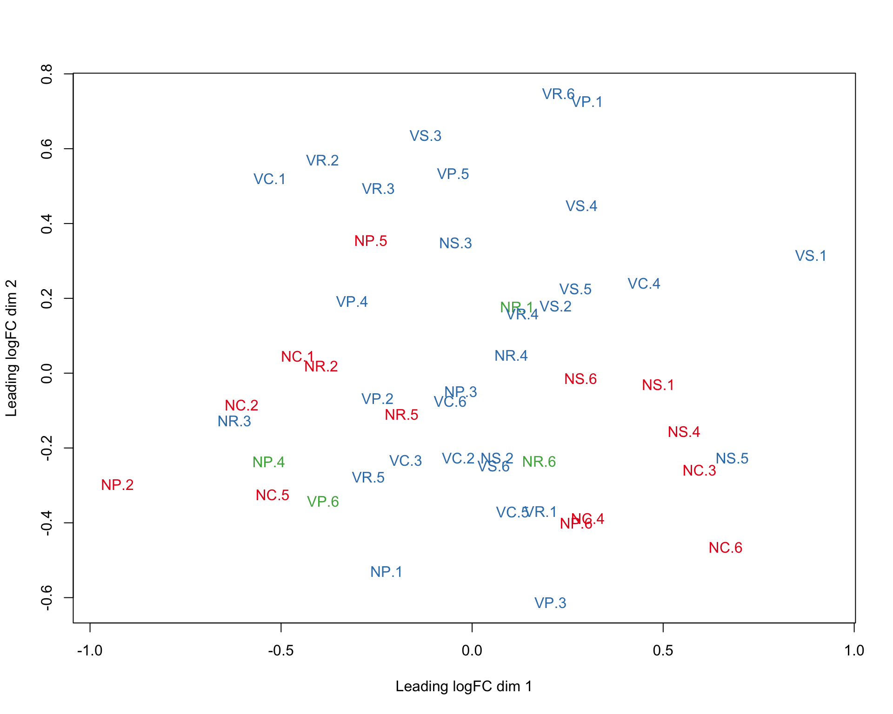
IAPV RLOG
plotMDS(rld, labels=colnames(rld), col=col.iapv)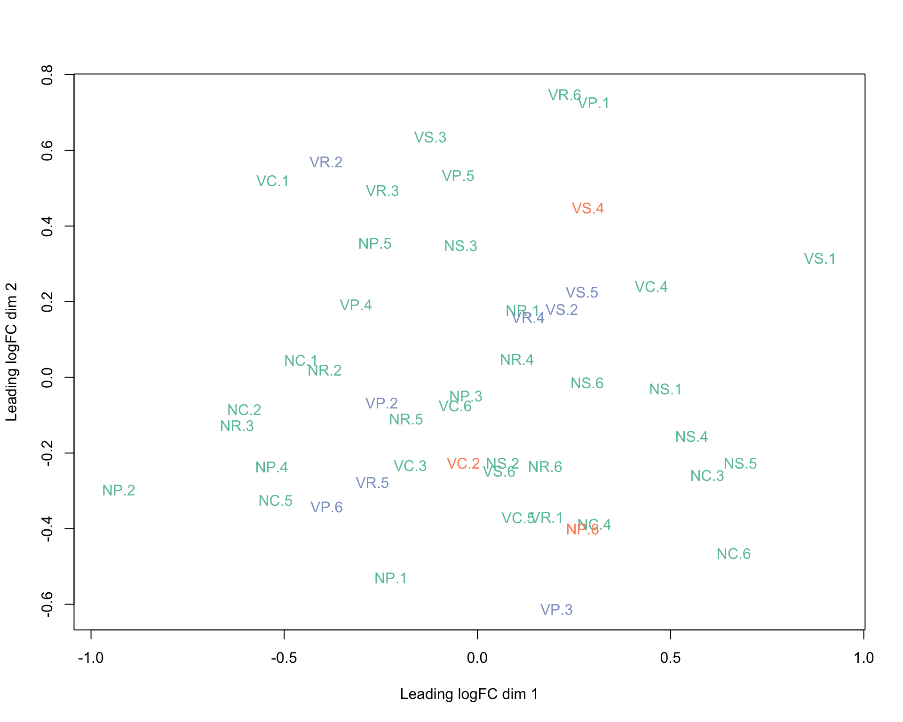
RNAConc RLOG
plotMDS(rld, labels=colnames(rld), col=col.rnaConc)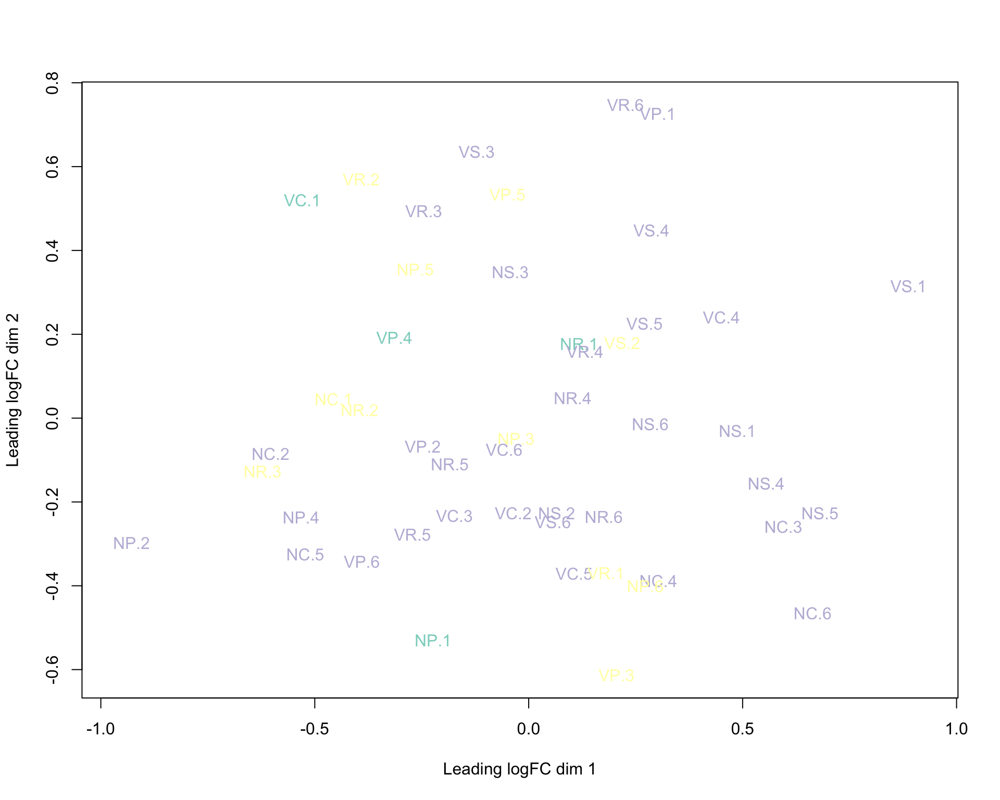
RIN RLOG
plotMDS(rld, labels=colnames(rld), col=col.rin)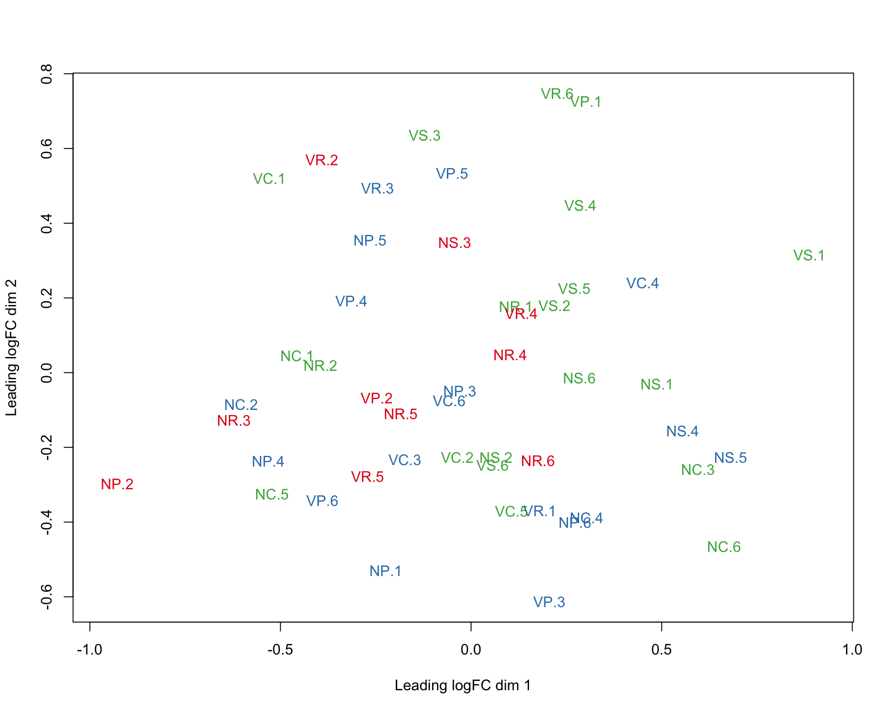
Make interactive plots for all variables in RLOG
glMDSPlot(rld, labels=paste(x$samples$group, x$samples$virus, x$samples$diet, x$samples$lane, x$samples$day, x$samples$mortality, x$samples$sbv, x$samples$iapv, x$samples$rnaConc, x$samples$rin, colnames(rld), sep="_"), groups=x$samples[,c(1,c(4:12))], launch=FALSE, folder = "glimmaPlotsRLOG", html = "glimmaPlotsRLOG")